后框成功补救 · val/HACS/Preparing_pasta_v_IzyCyVQrmkw_scene_0_0-2915
打开原尺寸矢量图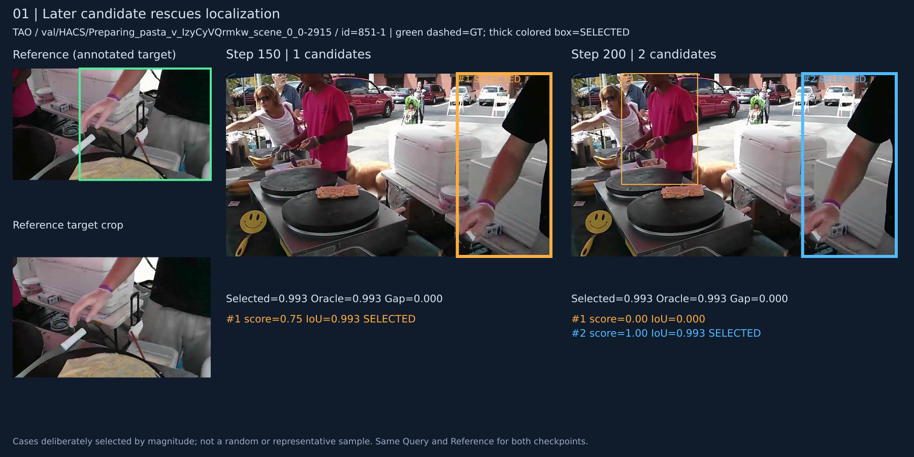
来源：发现优先奖励 score=0.4。全部1766个样本按 dataset_index、id、target 对齐，两次清单相同。左侧为 Reference 和目标裁剪，中间/右侧为同一 Query 的两次预测。绿虚线为 GT，粗彩框为最终选框；#编号为原始候选顺序。GT 仅用于离线展示，未参与选框。
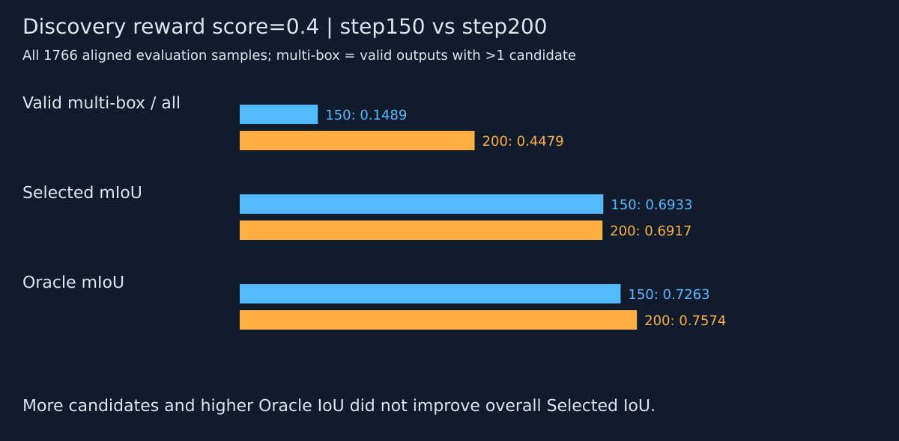
多框率 14.89% → 44.79%；Selected mIoU 0.6933 → 0.6917；Oracle mIoU 0.7263 → 0.7574。候选增多并未转化为整体最终定位提升。多框子集随checkpoint变化，不能当成同一批样本直接做因果比较。
案例按对应指标差值从大到小挑选，每类最多3个、不同视频序列且全局不重复，共15个。属于用于解释行为的极端案例，不代表总体分布。类别池可重叠，图中每个案例只展示一次。

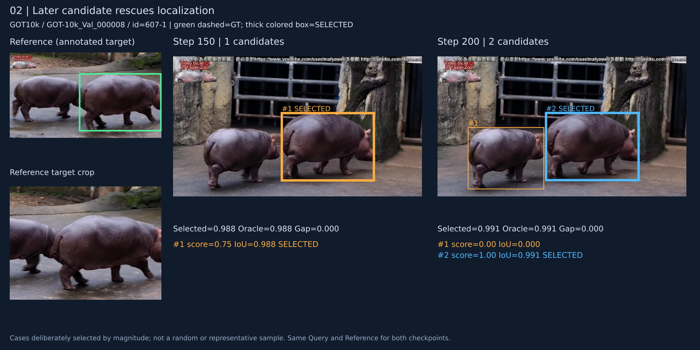
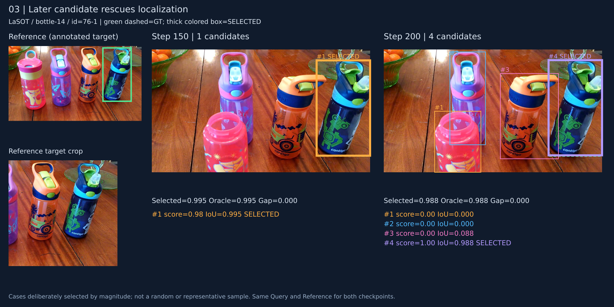
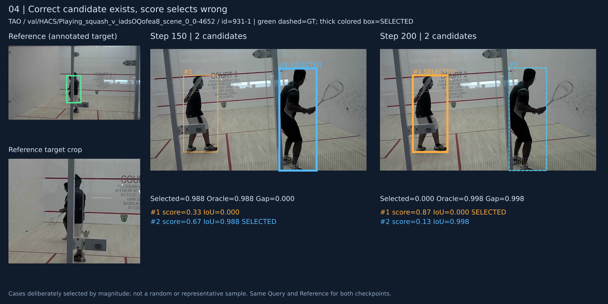
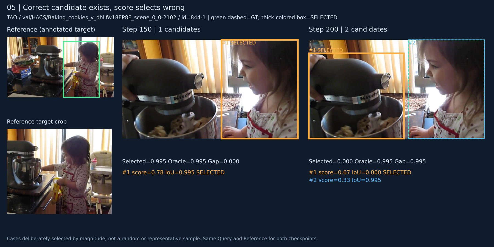
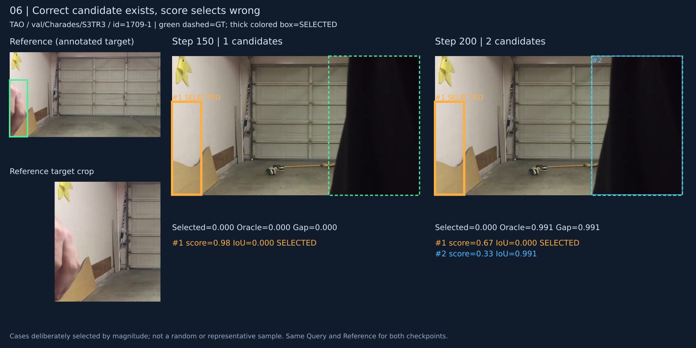
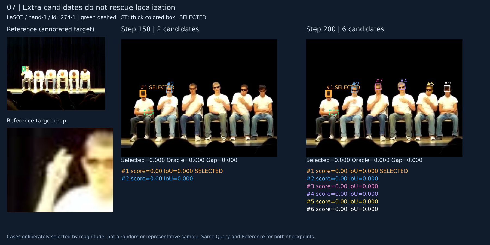
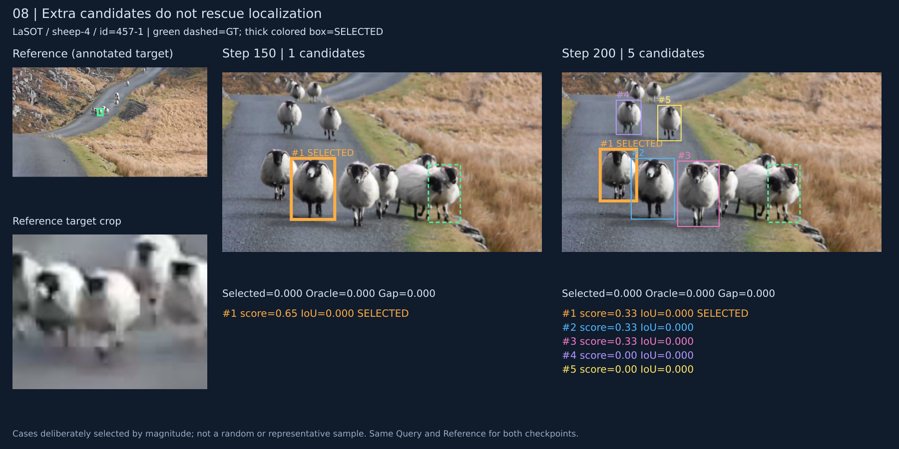
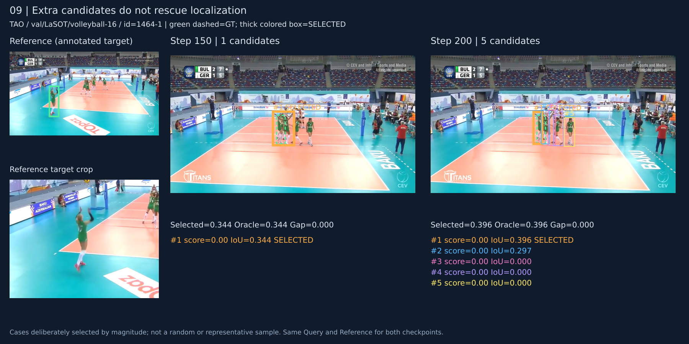
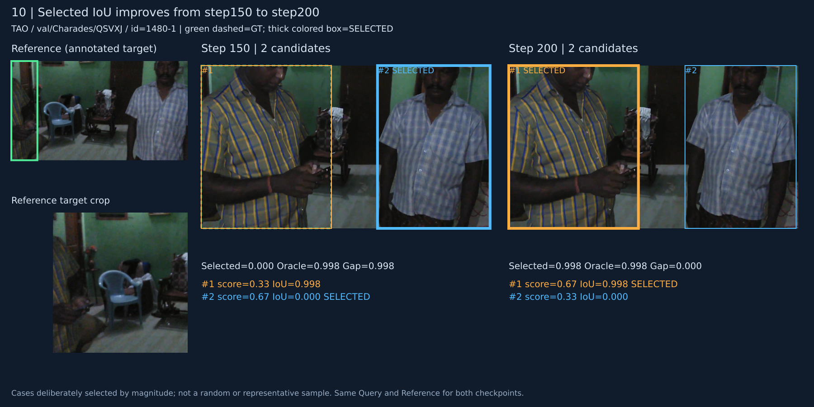
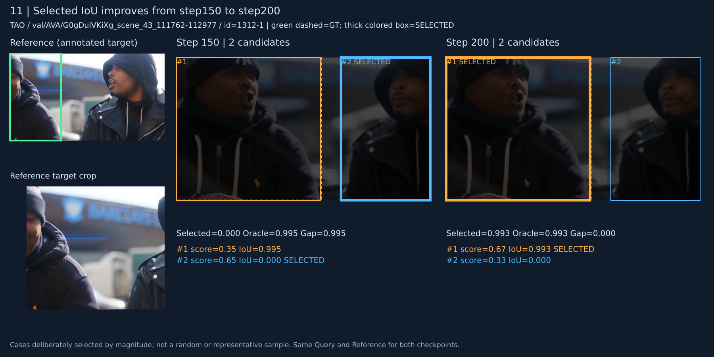
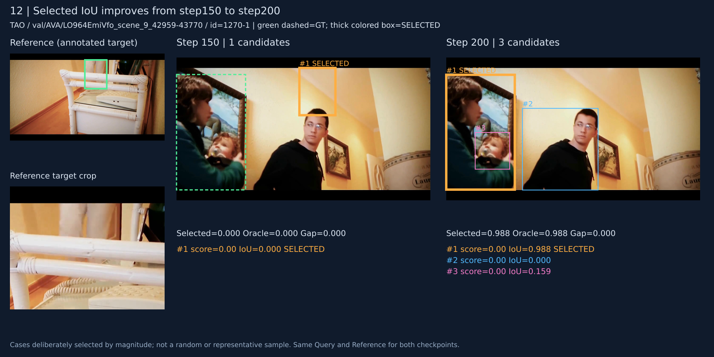
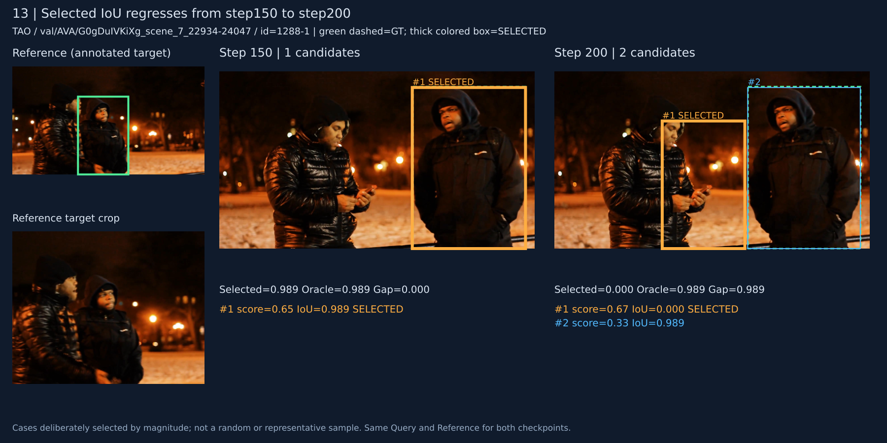
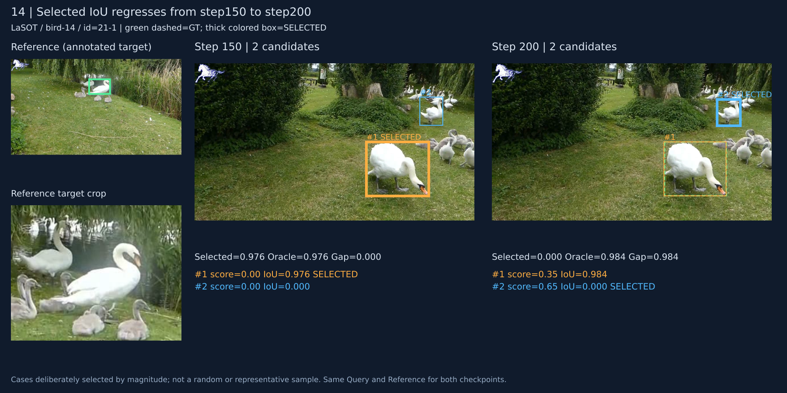
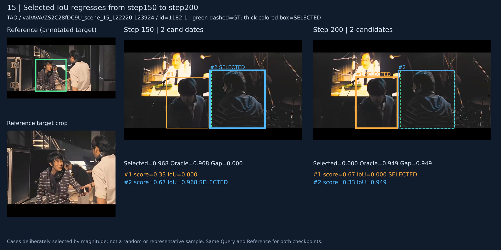
分析与图像均由既有产物生成，未重新运行模型。完整来源、哈希及选择规则见同目录 JSON 文件。